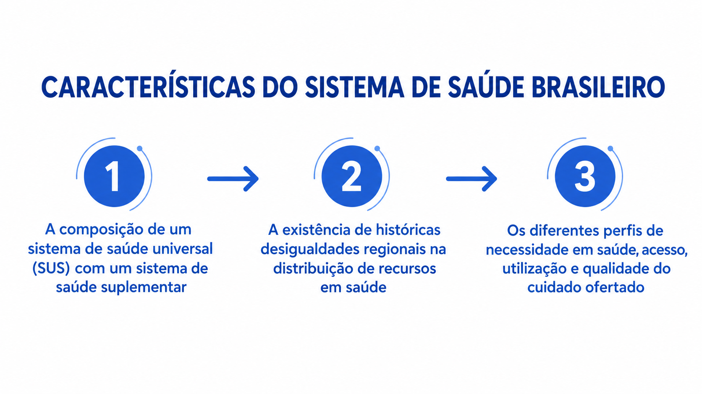

Módulo 2 | Aula 3
Condução e Estrutura do Sistema de Saúde
O que é a Estrutura do Sistema de Saúde?
A dimensão Estrutura do Sistema de Saúde na matriz do Proadess agrupa os elementos fundamentais que condicionam as possibilidades de desempenho dos serviços de saúde. Essa estrutura é um condicionante que permeia todo o funcionamento do sistema, sendo orientada pelas necessidades geradas pelas condições de saúde da população.
A Estrutura é composta por duas dimensões interdependentes:
Em resumo, a estrutura provê a arquitetura e os meios (o "com quê" e o "sob quais regras") para que o sistema possa realizar as intervenções de saúde, sendo seu bom funcionamento dependente da integração adequada desses recursos sob uma condução política e técnica eficaz.
Para avaliar o sistema de saúde brasileiro, devemos levar em consideração algumas de suas características:

Fonte: CVF, a partir dos autores.